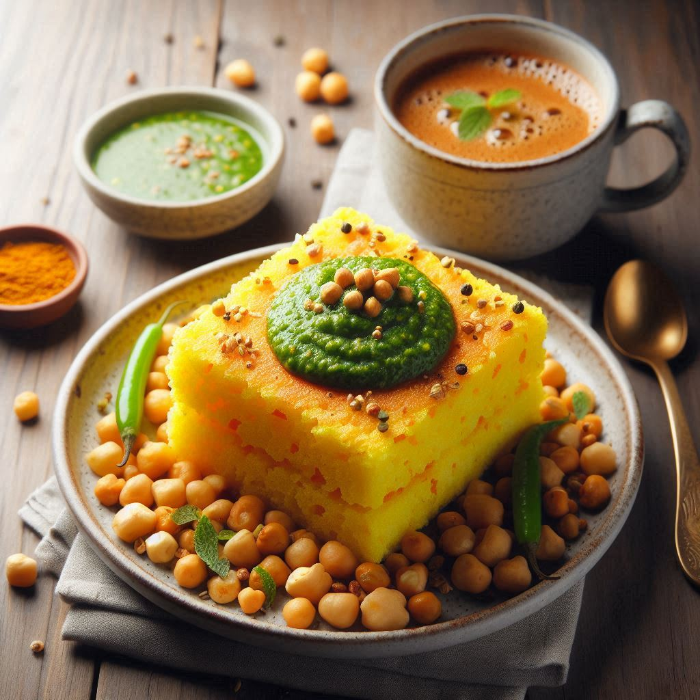
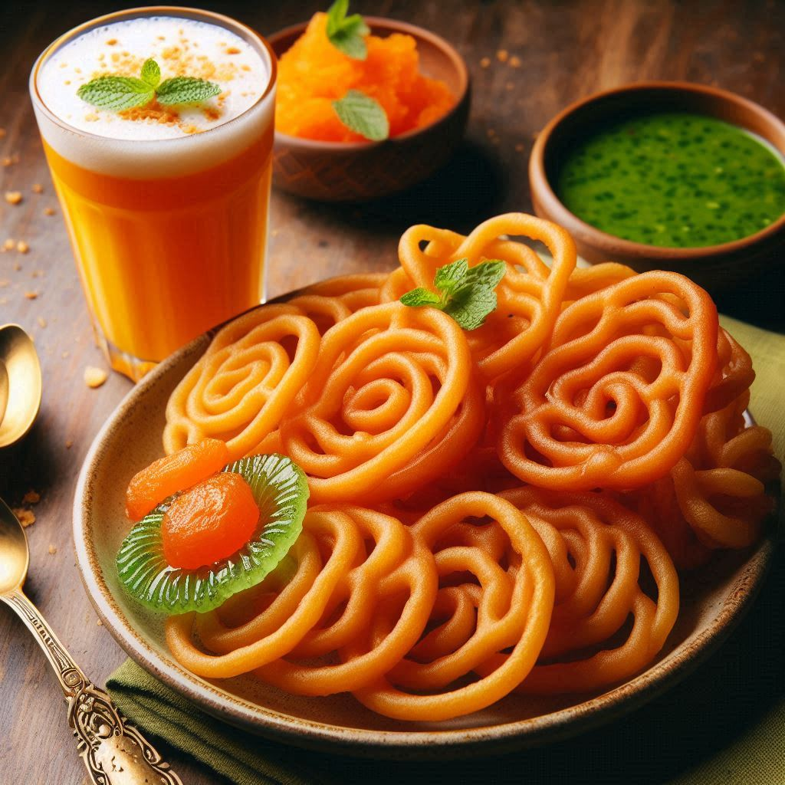

Gujarat's cuisine is well-known for its unique flavors, emphasis on vegetarian dishes, and extensive use of spices, making it distinct and memorable. The traditional food of Gujarat offers a mix of sweet, spicy, and tangy flavors, and often features an array of snacks, sweets, and main courses. Here is an overview of the popular dishes and culinary elements of Gujarati food:
1. Gujarati Thali
A Gujarati thali is a sumptuous platter offering a balanced combination of various dishes. It typically includes:
- Rotli (Chapati), Bhakri (Millet Bread), or Puris
- Dal (Lentils) or Kadhi (Yogurt-Based Curry)
- Shaak (Vegetable Curries) – often a mix of dry and gravy-based preparations
- Rice or Khichdi (a mix of rice and lentils)
- Farsan – Savory snacks such as Khaman Dhokla, Khandvi, or Patra
- Pickles, Chutneys, and Salads
- A sweet dish, known as Mithai, such as Shrikhand, Basundi, or Gulab Jamun
2. Signature Dishes
- Dhokla: A soft and spongy steamed cake made from fermented rice and chickpea flour batter, seasoned with mustard seeds, green chilies, and coriander leaves.
- Khandvi: Thin rolls made from gram flour and yogurt batter, seasoned with mustard seeds and grated coconut.
- Undhiyu: A winter delicacy, this dish consists of a medley of seasonal vegetables, fenugreek dumplings (muthia), and spices, cooked in an inverted pot (traditionally underground).
- Thepla: Flatbread made from a dough mixture of wheat flour, fenugreek leaves, spices, and sometimes grated vegetables.
- Fafda and Jalebi: A popular breakfast or snack combination, fafda is a crispy gram flour snack served with hot and syrupy jalebis.
- Handvo: A savory cake made from a mixture of lentils and rice, seasoned with spices and sometimes mixed with vegetables.
3. Snacks and Farsan
- Patra: Colocasia leaves smeared with a spicy gram flour paste, rolled, steamed, and fried.
- Sev Khamani: A sweet and spicy dish made with crumbled dhokla, topped with sev and pomegranate seeds.
- Ganthiya: A popular tea-time snack made from deep-fried chickpea flour dough.
- Khakra: Thin, crispy flatbreads made from a dough of wheat flour and spices, served as a crunchy snack.
4. Sweets (Mithai)
- Shrikhand: A creamy dessert made from strained yogurt, flavored with cardamom, saffron, and nuts.
- Mohanthaal: A rich and grainy fudge-like sweet made with gram flour, sugar, and ghee.
- Basundi: A thickened milk dessert, flavored with cardamom, saffron, and garnished with chopped nuts.
- Doodhpak: A sweetened milk pudding flavored with cardamom and served with puris.
- Ghughra: Sweet dumplings stuffed with a mixture of coconut, nuts, and sugar.


5. Beverages
- Chaas (Buttermilk): A refreshing drink made from yogurt, water, and spices like cumin and coriander leaves. It is a staple accompaniment to meals.
- Aam Ras: A sweet mango pulp, often served during the mango season and paired with puris.
6. Street Food
- Dabeli: A spicy, tangy potato mixture stuffed into a bun, garnished with pomegranate seeds, sev, and peanuts.
- Kachori: A deep-fried pastry filled with spicy lentils or pulses.
- Sev Usal: A spicy curry made with peas and topped with sev (crispy chickpea noodles).
7. Unique Elements
- Use of Spices: Gujarati cuisine features a mix of sweet and spicy flavors. Ingredients like jaggery (gur), sugar, mustard seeds, asafoetida (hing), curry leaves, and tamarind are widely used.
- Vegetarian Focus: A significant portion of the Gujarati population is vegetarian, so the cuisine is predominantly plant-based.
Conclusion
Gujarati food is characterized by its creativity and distinct flavors, blending sweet, salty, and spicy notes in harmonious ways. Whether it's the humble khichdi or the elaborate undhiyu, every dish is prepared with great care and attention to taste, making Gujarati cuisine a rich and delightful experience.